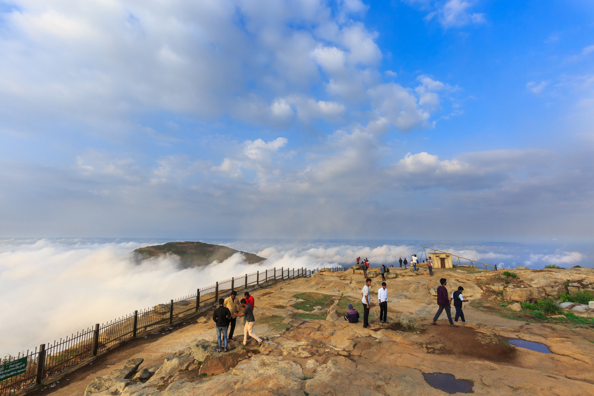
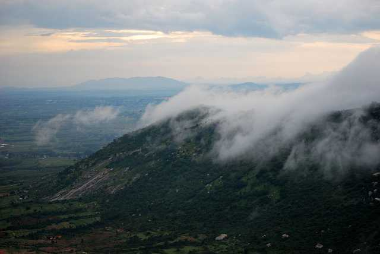

|  |  |
|
"Nandi Hills" the first thought came to every Banglaorian and all other people's mind if they planning some random trip, so it was after a day of when I got my Driving License and had jsut finished my exams, so called the two of my friends and decided to visit Nandi Hills. We got up and got ready early morning,we started our journey at 5:30AM from VijayaNagar Bangalore. At early morning, you can reach your destination pretty fast with minimalist traffic. it takes 1.5 hrs to 2 hrs depending on the traffic to reach Nandi Hills, Once we turned in to the Nandi Hills road from the National Highway, the experience was really awesome. On the way to the hill top, we stopped and had tea, you will feel amazing having the cup of tea on cloudy day with fresh air and beautiful morning. |
|
On the way, you should focus on the scenic road, the way is not the fastest way but it has beautiful scenery. To enter the top most part of nandi hills, we need to enter through the gate which opens at 6AM. We entered and directly went to view point. Sunrise View Point: You get the best view of sunrise from this point. It was rainy season so cloud condensation brings water with it, it feels like we were on top of cloud. Weather was too cold, temperature was near about 15*C. Although we din't get ro see the sunrise, as it was hidden somewhere in cloud. After capturing nice view, we went to have breakfast. You will find restaurants with nice taste. If you decide to go up on a weekend, you will see a lot of people like you i.e. the college going people and working bachelors as the major strength. |
You can take up this route to reach up the destination.
P.S. Please visit the hills early morning and enjoy the view.
Be safe and Happy Travelling.
-Just a guy who travels and shares his experience